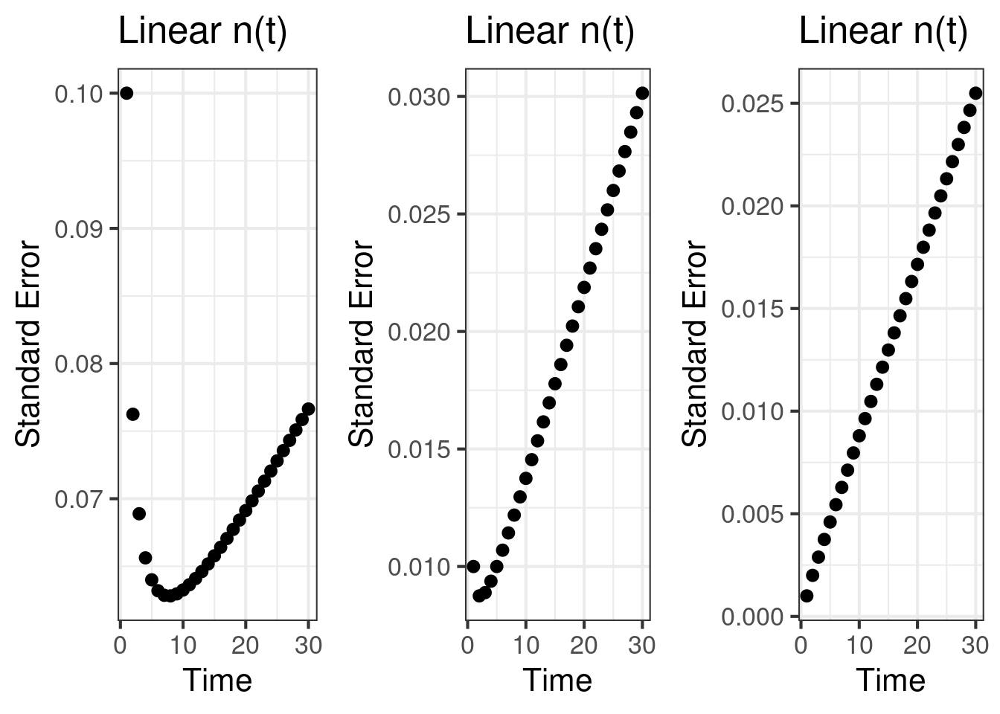
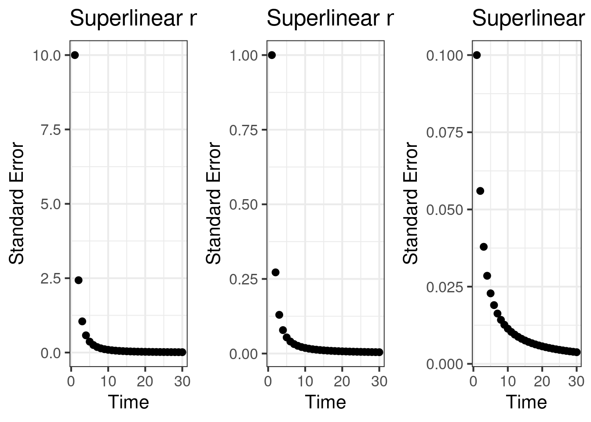

In this post we study the convergence speed of an experiment. Over time, we accumulate sample size. As that sample size increases, statistical power is supposed to increase and MDE decreases. But over time, what conditions make this guarantee? Can variance over time increase, for example due to nonstationarity, seasonality or trends? And if so, how does that affect the power that is being accumulated over time? How does the aggregation over time affect this process? What if our ability to collect samples decreases over time? We study how aggregations like means and variances, the inputs into statistical tests, are actually stochastic processes and how that affects the standard error, the key input into the MDE.
Accumulating Data and Aggregating it
Different cohorts of subjects enter the experiment at different times. Say that cohort \(c\) arrives at the experiment at time \(A(c) = c\), so cohort 1 arrives on day 1, cohort 2 arrives on day 2, etc. We can consider this statement widely true in different experiments, so we don’t consider any other form of arrival times. Say the size of the cohort that is arriving on day \(t\) is \(n(t)\). The experiment ends on day \(T\), where \(N(T) = \sum_{t=1}^T n(t)\) subjects have been accumulated.
Let \(y_c(t)\) be the metric value for cohort \(c\) at time \(t\), and \(Y_c(T) = \sum_{t=c}^T y_c(t)\). In this sum, the cohort that enters on day 1 is observed for \(T\) days, while the cohort on day 2 is observed for \(T-1\) days and the cohort on day \(T\) is observed for 1 day. (Note that this is not an average over time, it is simply a sum; we will discuss how this sum has adverse effects on convergence and shine light on why averages are very useful.)
Say that \(y\) is normally distributed iid so \(y \sim N(\mu, \sigma^2)\) and for simplicity is not a function of the cohort. Then the distribution of the sum is \(Y_c(T) \sim N((T - t + 1)\mu, (T - t + 1)\sigma^2)\) where we emphasize cohort \(c\) arrives at time \(t\). By the time the experiment ends on day \(T\), the data in \(Y(T)\) that we observe follows a mixture distribution. The \(t^{th}\) component has mean \(\mu_t = (T - t + 1)\mu\) and variance \(\sigma_t^2 = (T - t + 1)\sigma^2\). Using the sizes of the components, \(n(t)\), we can compute the overall mean and variance of this mixture distribution.
Given \(T\) components with mixture weights \(\pi_t\), the mean and variance of the mixture distribution are generically
\[\begin{align} \tilde{\mu}(T) &= \sum_{t=1}^T \pi_t \mu_t \\ \tilde{\sigma}^2(T) &= \sum_{t=1}^T \Bigl(\pi_t (\sigma_t^2 + \mu_t^2)\Bigr) - \tilde{\mu}(T)^2 \end{align}\]
Applying this to our data generating process, we have the system
\[\begin{align} \mu_t &= (T - t + 1) \mu \\ \sigma_t^2 &= (T - t + 1) \sigma^2 \\ \pi(t) &= \frac{n(t)}{N(T)} \\ \tilde{\mu}(T) &= \sum_{t=1}^T \pi(t) \mu_t \\ \tilde{\sigma}^2(T) &= \sum_{t=1}^T \pi(t) (\sigma_t^2 + \mu_t^2) - \tilde{\mu}(T)^2 \\ \end{align}\]
Convergence
Other than the effect size, the standard error is the key statistic that drives the accumulation of statistical power. It has a lever that we can control, how much time do we dedicate to accumulate \(n\). The standard error process, \(SE(T) = \frac{\tilde{\sigma}^2(T)}{N(T)}\), is charted below. We note some interesting patterns:
- The standard error can decrease over time, and then increase. This is a peculiar behavior.
- \(\mu\) and \(\sigma^2\) influence what regime we are in, a decreasing standard error or an increasing standard error. When \(\sigma^2\) is large, a small increment in \(n\) can tame the standard error and decrease it. However, eventually the growth in \(\tilde{\sigma}^2\) outpaces \(n\) causing the standard error to increase.
- If we are accumulating \(n(t)\) quickly, in a superlinear way, the standard error process always goes down.


Aggregation method is important.
The pattern that the standard error can go up as you accumulate \(n\) is a strange pattern. As we illustrate, this can happen even when \(y(t)\) is a random variable with fixed mean. The core reason for why the SE process can increase is that \(\tilde{\sigma}^2(T)\) is growing faster than \(N(T)\) is growing. This is due to the unbounded growth in \(Y_c(T)\), combined with the form of \(n(t)\). When \(n\) is accumulating from a finite pool, the ability for \(N(T)\) to grow slows down whereas \(\tilde{\sigma}^2(T)\) continues to grow in an unbounded way. If \(n\) is accumulating from an infinite pool, or is in a regime with fast growth, it is possible to be in a regime where the standard error process is going down.
Aggregation is important. We need to prevent \(\tilde{\sigma}^2(T)\) from growing unbounded. There are multiple ways to do this. In the simple case, each component can divide the term \((T - c + 1)\), so that all components are identically distributed as \(N(\mu, \sigma^2)\), collapsing the mixture to a single normal distribution. Using this aggregation, \(Y_c(t)\) does not grow as \(T\) increases. At the same time, the denominator \(N(T)\) increases, even if slowly, creating a guarantee that the SE process decreases.
Another way to do this is to aggregate \(y(t)\) using a window with a fixed size, \(S\), and limiting the analysis of the experiment to subjects who have been in the experiment for at least \(S\) days.
What if y(t) is nonstationary?
The above strategies can create guarantees due to the fact that the underlying \(y(t) \sim N(\mu, \sigma^2)\) where \(\mu\) and \(\sigma^2\) were constants. This created a guarantee that \(Y_c(T)\) would not grow unbounded. However, if \(y(t)\) has a trend, it is possible for \(Y_c(T)\) to grow unbounded again. That is content for a different post.